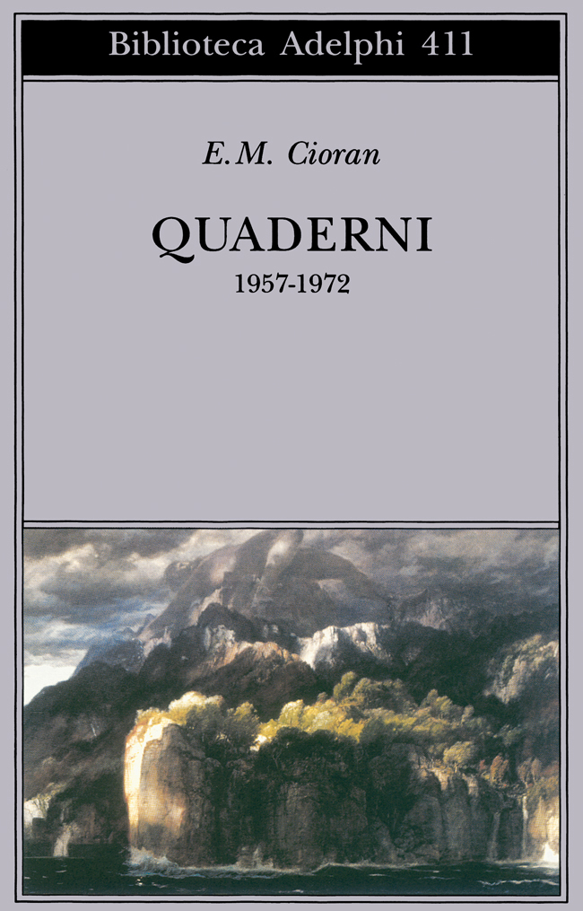
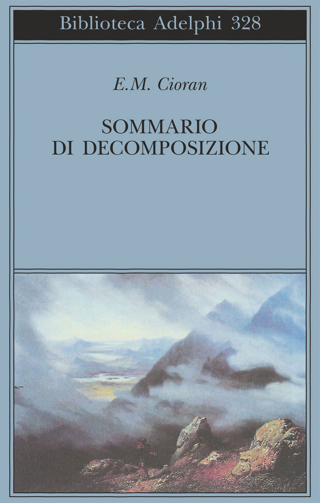

27:19 · 7 OPERE
Émile Cioran e la mitologia del lavoro.
Il filo del discorso
La figura di Cioran viene letta attraverso il rapporto fra libertà, lavoro e rifiuto dei ruoli sociali. Dr Divago interpreta le dichiarazioni di indolenza del pensatore come una forma di ironia e di resistenza alla pretesa di misurare ogni esistenza dal suo rendimento. Il Sommario di decomposizione e i Quaderni accompagnano questa lettura, mentre il confronto con Horkheimer e Adorno introduce il tema della riduzione della persona a funzione produttiva.
Leggi la sintesi completaRiduci la sintesi
Il percorso si allarga a Bukowski, Rousseau e al personaggio di Oblomov: secondo il relatore, il culto del lavoro avvicina ideologie che si presentano come opposte. L’Elogio dell’ozio di Russell fornisce un termine di paragone dal quale Dr Divago distingue la posizione di Cioran. La parte centrale mette al centro la distanza fra valore dell’individuo e prestigio professionale, il rapporto con persone marginali e la polemica contro la cultura istituzionale. Il rifiuto dei premi letterari viene interpretato come scelta estetica oltre che intellettuale. Nella seconda parte, il discorso passa alla storia, vista attraverso la disillusione e il desiderio di sottrarsi alla catastrofe, e poi alla morte come ossessione e limite della formulazione filosofica. La scrittura è descritta come un modo di rendere più sopportabile ciò che non si può risolvere. La conclusione intreccia pensiero, amore e rinuncia alla scrittura. È un ritratto interpretativo del relatore: i paradossi autobiografici, gli aneddoti e la lettura della vita affettiva non vengono trasformati in una biografia definitivamente accertata.
I libri nel discorso

Quaderni. 1957-1972
Note sul riferimento
Copertina: Adelphi · Biblioteca Adelphi 411, 2001 · prefazione Simone Boué, traduzione Tea Turolla
Immagine autentica dell’opera, controllata visivamente; l’edizione di riferimento non è attribuita al filmato.
I quaderni di Cioran sono nominati e richiamati anche più avanti.

Oblomov
Note sul riferimento
Copertina: Einaudi · 2000
Copertina autentica controllata visivamente. Edizione di riferimento; non identifica l’esemplare usato o citato nel video.
Oblomov è esplicito come personaggio e termine di confronto; non viene fusa la finzione con la biografia di Cioran.

Sommario di decomposizione
Identificazione probabile
Note sul riferimento
Copertina: Adelphi · Biblioteca Adelphi 328, 1996
Immagine autentica dell’opera, controllata visivamente; l’edizione di riferimento non è attribuita al filmato.
Il relatore introduce il passo con Nel sommario di, poi il titolo si interrompe nella trascrizione automatica: identificazione probabile da controllare in ascolto.

Dialettica dell’illuminismo
Identificazione probabile
Note sul riferimento
Copertina: Einaudi, Piccola Biblioteca Einaudi, 2010
Edizione illustrativa dell'opera, con traduzione di Renato Solmi e introduzione di Carlo Galli; non identificata nel video.
Autori, anno 1947 e formula sulla reificazione suggeriscono la Dialettica dell’illuminismo; titolo non annunciato.

Il contratto sociale
Note sul riferimento
Copertina: Laterza · Economica · ristampa 2023 · edizione di riferimento
Il Contratto sociale è nominato nel richiamo alla libertà e alle catene.

Elogio dell’ozio (In Praise of Idleness)
Note sul riferimento
Copertina della raccolta che contiene il saggio: Longanesi · raccolta Elogio dell’ozio · 2004 · traduzione di Elisa Marpicati
Copertina della raccolta italiana omonima di quindici saggi, Longanesi, 2004. Il saggio annunciato è del 1932; non si attribuisce al filmato questa specifica edizione.
Russell e l’Elogio dell’ozio sono espliciti.

Il mito di Sisifo
Note sul riferimento
Copertina: Bompiani · Tascabili · edizione italiana di riferimento
Copertina autentica di riferimento, controllata visivamente. L’edizione non è identificata come quella usata nel video.
Camus e Il mito di Sisifo sono espliciti nel confronto sul tema della morte.